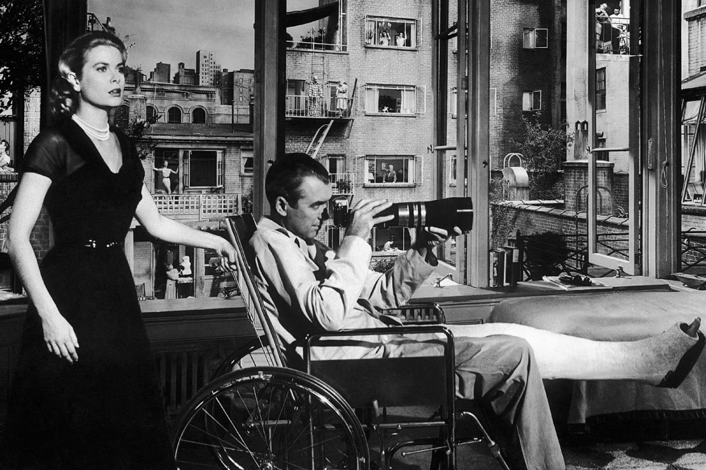
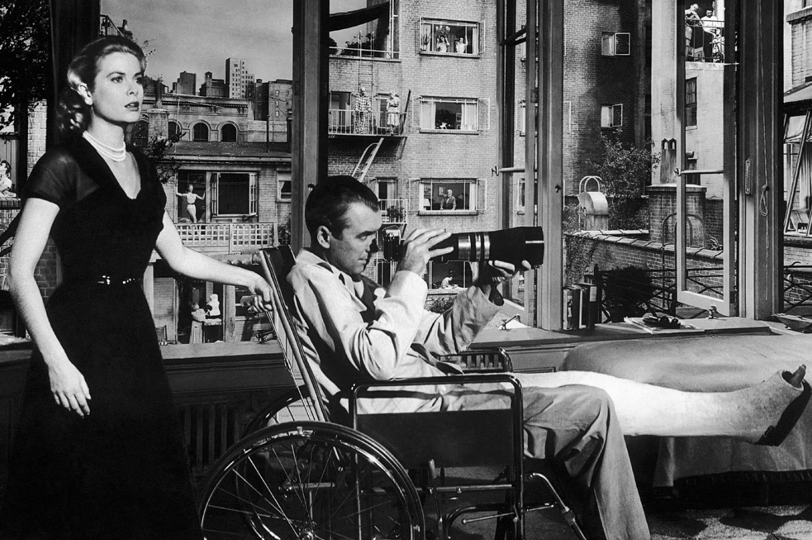
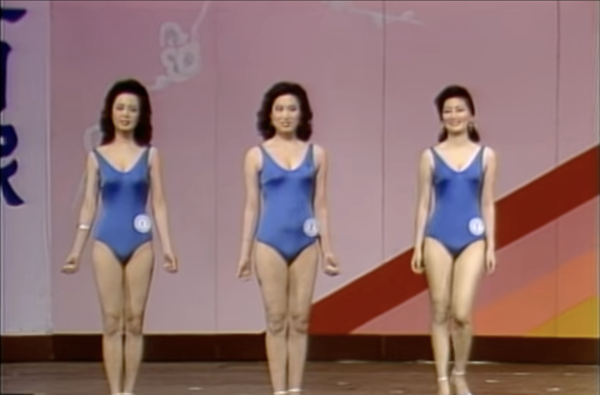
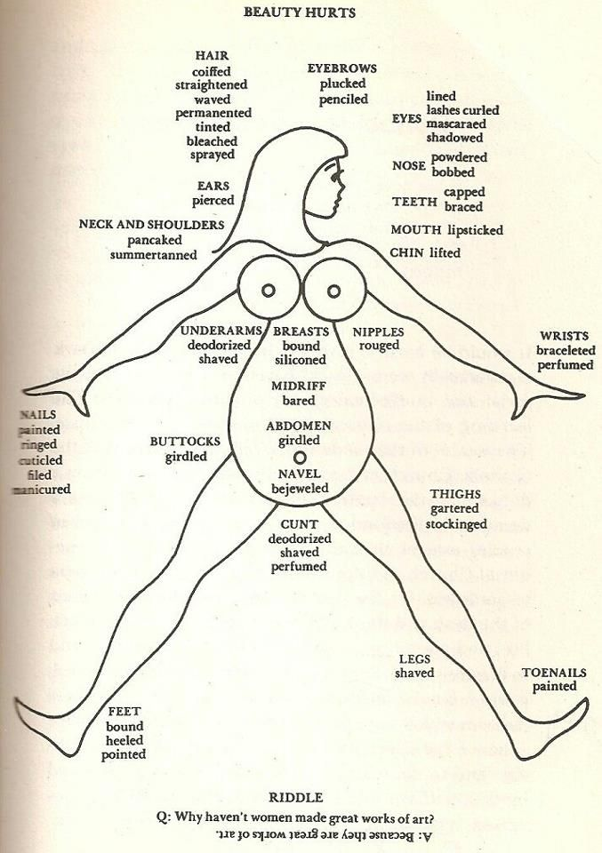
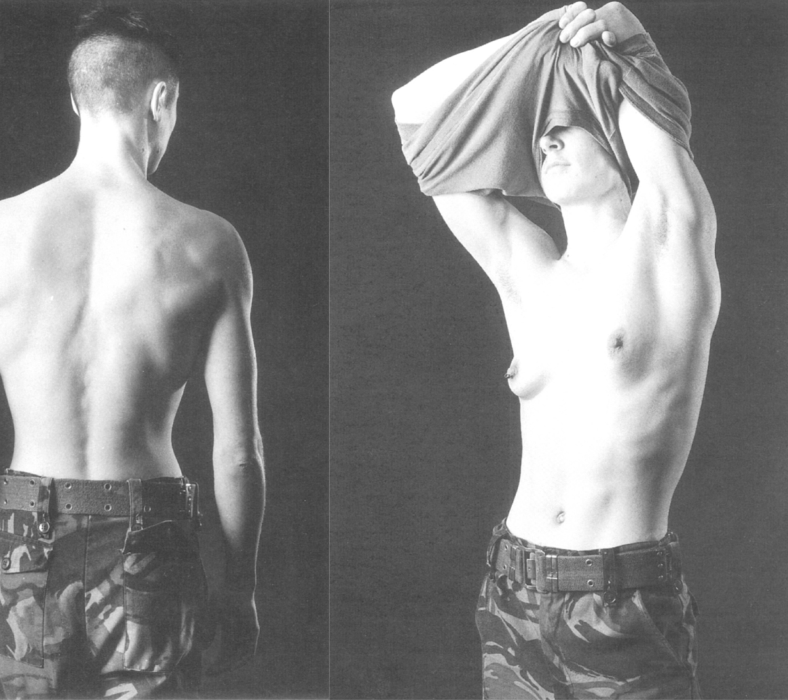
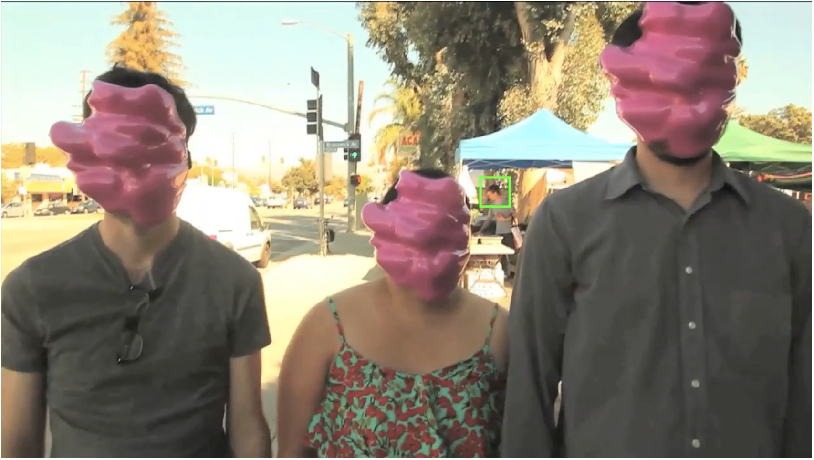
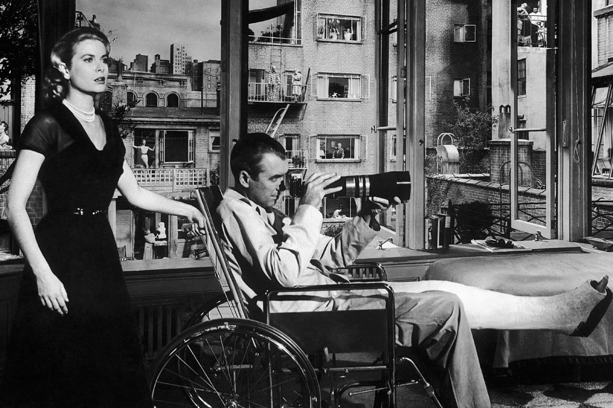

Against the Micro Voyeuristic Epoch
Eunseo Hyun
Royal Academy of Art, The Hague(KABK)
Under the supervision of Fusun Turetken, François Girard-Meunier, Thomas Buxo
2022

.jpeg) 





Eunseo Hyun
Royal Academy of Art, The Hague(KABK)
Under the supervision of Fusun Turetken, François Girard-Meunier, Thomas Buxo
2022

'In this thesis, I begin with the process of the settlement of voyeuristic culture in mass media and everyday life as a result of how voyeurism, as a primitive desire, came to be learned and expressed. ‘Voyeurism', in this paper, not only refers to a fetish of sexual pleasure that occurs by seeing someone else's body or sexual behavior, but also includes the pleasure of observing the private sides of others. I will also refer to the term 'Scopophilic' which is defined by Freud and others in his ‘Three Essays in Sexuality' as desire, and how it is expressed. There are visual records that have appeared during modernization, which expose a certain way of how people look or gaze at subjects for their personal fulfillment of visual pleasure. For instance, the Hollywood-style films that function as a set of holistic voyeurists, as claimed in Laura Mulvey's essay 'Cinematic Visual Pleasure and Male Gaze', attempt to objectify their subjects who are typically heroines. These films intentionally encourage the audience to experience voyeuristic pleasure; therefore, becoming an accomplice that dominates the objectified subjects with a voyeuristic gaze. Since the voyeuristic visual culture mostly contains a heterocentric male gaze and promotes appearances and bodies which are fitted in “social normality” to be considered as desirable figures, this phenomenon is elaborated upon to show how problematic the voyeuristic gaze operates in the realm of pleasant entertainment.
Furthermore, I discuss how voyeuristic desire has been accelerated beyond the limit of physical, temporal borders in conjunction with the advancement of digital technology in modern society, with reference to the crucial research conducted by Kim Sora, Christine Lavrence, Carolina Cambre, and Willam Brown. I will go on to argue the blind point of the current digital epoch which shamelessly uses voyeurism as a tempting fish hook to push people to become actively engaged, and even transforms them into not only the spectator but the spectacle at the same time. My research further concentrates on seeking ways to deconstruct the power play between the holders of the gaze that employs this form of voyeurism, which has already established itself as a cohesive entertainment culture. From the standpoint of the one who is a designer and cannot be innocent from the seduce of capitalistic visual culture at the same time, I conclude by suggesting alternative ways to fulfill visual pleasure in more queer-multicultural inclusive methodologies.
The existence of the gaze is sometimes taken for granted. Nonetheless, the power of the gaze is truly enormous. (1)(1) According to Jacques Lacan's Mirror Stage hypothesis, the sensation of being gazed at is inherited from infancy. The mirror stage occurs when a child encountering a mirror learns that they have an external appearance. Theoretically, this is where the child begins their entrance into culture and the world. (Licitra Rosa, Carmelo; Antonucci, Carla; Siracusano, Alberto; Centonze, Diego, "From the Imaginary to Theory of the Gaze in Lacan", Frontiers in Psychology, p. 12) People are in circumstances where they are forced to see themselves and others every day. If eyesight is active, we will inevitably see numerous objects in our daily lives. For instance, waking up in the morning and seeing oneself in the bathroom mirror, or unintentionally looking out of the window to catch a stranger walking their dog. Inadvertently, seeing others is not limited to being in proximity to them in real time. While casually watching television, one sees that a model promotes products with the most fascinating expressions and gestures. Images of close-ups of the lips, the waist, the legs, and the abdominal muscles pass by at a rapid tempo. In this way, without recognizing it yet, the behavior of observing others is becoming settled instinctively and unconsciously into our daily life, while at the same time implanting a voyeuristic pleasure deep into our minds.
Observing someone cannot be defined simply by looking at them. Intersecting gazes among people entails a game of power, like an acute battle of an objectifying look. According to the definition of objectification by the Stanford Encyclopedia of Philosophy, it can be defined as the seeing and/or treating of a person, usually a woman, as an object. The act of observing a subject or being observed by others can be interpreted as dominant or subordinated, even outside of erotic circumstances. The person who dominates with the gaze objectifies and looks at the ruled party. If that is the case, how does merely looking at someone lead to objectification? When relationships based on domination and subjection with the gaze are active, the submissive one is considered and treated as the object, which is triggered and owned by the dominant's desire. Therefore, the person who is the target of the gaze becomes only an object that fulfills the visual and psychological satisfaction of the see-er. (2)(2) On Being Objective and Being Objectified, Sally Haslanger, p.225
In this sense, the gaze acts as an aggressive force that has the potential to subjugate the subjects. As an extension of the foregoing context, what I focus on is not only the act of simply observing subjects and possessing them with the gaze but also how structurally it has become easier and more accessible to observe others via the advancements in digital technology without the observer revealing themselves. (3)(3) Jonathan Coopersmith, Does Your Mother Know What You Really Do? The Changing Nature and Image of Computer-Based Pornography, (2000)
The dominance created by this imbalance between what is seen and not seen is now taking place not even in real life but in virtual spaces simultaneously. Rather than loosening up as the world has changed, this fierce power game of gazing has only intensified. As the digital era has evolved, with the digitalization of data progressing through the upheaval of modernization, the three-dimensional space no longer functions as the only entire material world after the 1990s. In the most primitive way, from not only seeing the subjects that exist within a three-dimensional space as vision, but we have reached an era of encountering visual elements displayed in a two-dimensional data world. Within this new normal it has become nothing strange to find images, that capture subjects, floating through the Internet and exposed to an unspecified number of people. The scope of the dominant, who holds the power of the gaze, has expanded to such an extent that it is difficult to even imagine any end.
Sadly, the border of time and space to fulfill voyeuristic pleasure has been deconstructed, nevertheless, the conventional heterocentric gaze is still prevalent in mass media. Despite attempts to expand the visualization of the diversity of gender and culture in visual media as times change, most of the visual elements that still occupy the majority are heterosexual-centered, such as cis-gendered male longing for cis-gendered women or vice versa. (3)(3) Uncommon Sensuality: New Queer Feminist Film/Theory, Sophie Mayer, 2015 In particular, when discussing voyeurism, data on the heterosexual male gaze has been most abundantly studied and visualized; that can never be skipped. This phenomenon should not be overlooked just for the reason that it has always been, or since it is the most influential due to having the most representation in mass media. For instance, the ways of observing and objectifying someone have been naturally educated by this heterosexual gaze; therefore, people are eventually becoming voyeurs towards themselves while objectifying their own bodies. On the other hand, they unconsciously watch, follow, even desire while fragmenting others' lives, and this is one of the biggest matters of contemporary society which should not be underestimated.
Despite attempts to expand the visualization of the diversity of gender and culture in visual media as times change, most of the visual elements that still occupy the majority are heterosexual-centered, such as cis-gendered male longing for cis-gendered women or vice versa. (4)(4) Uncommon Sensuality: New Queer Feminist Film/Theory, Sophie Mayer, 2015 In particular, when discussing voyeurism, data on the heterosexual male gaze has been most abundantly studied and visualized; that can never be skipped. This phenomenon should not be overlooked just for the reason that it has always been, or since it is the most influential due to having the most representation in mass media. For instance, the ways of observing and objectifying someone have been naturally educated by this heterosexual gaze; therefore, people are eventually becoming voyeurs towards themselves while objectifying their own bodies. On the other hand, they unconsciously watch, follow, even desire while fragmenting others' lives, and this is one of the biggest matters of contemporary society which should not be underestimated.
Casually or horribly, people are dominated by the gaze of others in daily life, and now most of the time without even realizing it. Perhaps, we may unconsciously observe others and ourselves in a way that is dominated by the male gaze. The techniques for promoting the voyeuristic gaze in media become more sophisticated and vicious. Moreover, today's media are not limited to movies and television, but also expanded to social media on mobile phones, making it difficult to escape from such capitalist visual bait. In this way, it has been made so possible to access another person's personal life with an ease and convenience that it is almost incomparable to the past. In a time where such inescapable desires to see are existing everywhere, how should we respond to seeing something?
Before getting started, the upcoming examples are mentioned in order to clarify that voyeurism, fetishism, and desire can operate on multiple levels at different times – dating from historical times to now.
For example, in the legend about Lady Godiva from the 13th century, or the famous orientalist painting 'The Turkish Bath' by Jean Auguste Dominique Ingres, we could find the voyeuristic gaze which contains orientalist desire is dominant. In Orientalism(1978) Edward Said shows how Europeans and Americans have seen Eastern and Arab culture, not as it is, but ‘through their own eyes’. (5)(5) Caroline Evans and Lorraine Gamman, The Gaze Revisited, or Reviewing Queer Viewing, 2005, p.17 Not only the discourse within Orientalism but the ways of gazing at others with their own biased eyes and satisfying visual pleasures have been comprehensively developed. The act of gazing upon others and fulfilling visual pleasure possesses a long history and has continued to this day. If paintings were the visual means of recording ‘voyeurism’ before the development of photography, I would propose they can now be represented with the use of a camera. Just as it is suggested in the book The Wrong House: The Architect of Alfred Hitchcock (2013), Steven Jacobs describes the photojournalist as a professional voyeur. (6)(6) Steven Jacobs, The Wrong House: The Architecture of Alfred Hitchcock, December 4, 2013, p. 282 Now, imagine there is a group of people in a photo studio. In this cubicle space, a photographer is staring into the viewfinder of a camera mounted on a tripod, and a model poses opposite the photographer. In such a situation, there is a relationship that exists as a visual concept. The visual concept is made up of the relationship between the voyeur and the observed, and the spectator:
1.Voyeur
2.Subject(receiver of the gaze)
3.Spectator outside from the frame
Then, what does ‘Voyeur’ mean here?
A voyeur is a person who gazes upon subjects. Moreover, it can be defined as a person who captures and dominates subjects via the gaze. The receiver of the gaze functions as an object which fulfills visual and voyeuristic pleasure. The object captured by the gaze of the voyeur is not seen as it is, but in a subjective point of view, and never knows how they are perceived at the moment of shooting. (7)(7) Asbjorn Gronstad/Henrik Gustafsson, Ethics and Images of Pain, November 25, 2016, p.5 Therefore, the power structure between the voyeur and the object is unbalanced. The word voyeurism itself often means the sexual pleasure obtained from observing the sexual aspects of others, but it also includes the overall desire to capture the others' private sides. In Three Essays on Sexuality from the year 1905 written by Sigmund Freud, he isolated Scopophilia (voyeurism) as one of the component instincts of sexuality that exist as objects, subjecting them with the research from the inquisitive point of view. His examples center around the voyeuristic activities of children, their desire to see and make sure of the private and the forbidden (curiosity about other people’s genitalia) (8)(8) Visual Pleasure and Narrative Cinema, Laura Mulvey, 1975, p.806
Since the invention of the camera, in many cases, the voyeur holding the camera is male; therefore, the voyeuristic point of view they express is mostly settled under the male gaze. Then, what does the male gaze mean on earth? In Feminist Philosophy of Art (2008), A. W. Eaton describes:
“The male gaze refers to the androcentric attitude of an image; that is, its depiction of the world, and in particular of women, in terms of male or masculine interests, emotions, attitudes, or values. More specifically, ‘the male gaze’ usually refers to the sexually objectifying attitude that a representation takes toward its feminine subject matter, presenting her as a primarily passive object for heterosexual-male erotic gratification. (It is rarely observed but worth noting that ‘the male gaze’ is really a heterosexual male gaze, never a gay male gaze.)”
It has been tricky to achieve a horizontal relationship between the subject of the gaze and the party who becomes the object. (9)(9) Visual Pleasure and Narrative Cinema, Laura Mulvey, 1975 In films, the heroines are often treated as motives that trigger male protagonists to achieve their achievements, rather than as active subjects who practice actions with the same willpower as male protagonists. (10)(10) Laura Mulvey, Visual Pleasure and Narrative Cinema, 1975 Alternatively, the male gaze mentioned above appears dominantly in the film, and the entire body of the heroine is unnecessarily close-up and cut into pieces as an 'object' rather than a 'body', and they are savored with a gaze. In films made under patriarchal ideology, the heroine functions only as a fascinating and enjoyable spectacle that is indispensable. (11)(11) Laura Mulvey, Visual Pleasure and Narrative Cinema, 1975
Jill Soloway, an American television director, explains in their talk titled the Female Gaze the following asymmetrical conditions of the gazer and the subject, which is mostly an objectified heroine in the film. Consequently, in their talk, Soloway refer to Laura Mulvey whose wonderful critique appears in her acknowledged essay on Visual Pleasure and Narrative Cinema written in 1975. Mulvey refers to Hollywood films such as ‘Unchallenged, mainstream film coded the erotic into the language of the dominant patriarchal order’ and emphasizes how conventionally and in a clever way the erotic visual pleasure projected as the Male Gaze is prevalent in numerous existing films. In the era before the advent of other mass media, the film was a tool that could reveal the most innovative artistry. This mesmerizing medium was captivating enough just to show a moving person or landscape in front of the audience but underlying there was a prominent scopophilic desire. In addition, in the closed space of a cinema completely blocked from the outside, a sense of separation from the subject on the screen and a scopophilic illusion are produced and provided to the spectators as a 'spectacle'. Looking at a shining screen in the pitch-black space makes them feel as if they are peeping on others' private side. This sense arising from the spatial elements is an indispensable aspect in the voyeuristic context. The protagonist on the screen and the audience sitting in front of it share the sense of appreciating the heroine as an object and the power to occupy her body as their gaze with the screen between them. Mulvey mentions multiple films in the essay, but Rear Window (1954), directed by the English director Alfred Hitchcock, has the most voyeuristic theme among the other films and has shared the thematic trajectory with the text itself.
Steven Jacobs's 'The Wrong House: The Architecture of Alfred Hitchcock(2013)' follows the visual structure of Alfred Hitchcock's film, ‘Rear Window(1954)’. In the film 'Rear Window', by the English director Alfred Hitchcock from the year 1954, the film set was organized in a way that resembled city districts of New York like Greenwich Village. Hitchcock wanted the set to be a close structure, which reminds of the format of the theater or the panopticon. The film set was built also to function as an ideal setting for the camera view, meaning, the windows ratios were exactly the ratios of 16:9, thus, the windows function as the screens of cinema, and the courtyard in front of the windows are considered as a private space of the inhabitants. Hitchcock shows the architecture in the film as a visual propulsion tool by emphasizing the window during all scenes, which, as the title implies, is also the main subject of the film. Admittedly, he presents the window as a metaphor for the movie screen that protagonist James Stewart could fulfill voyeuristic pleasure while he is sitting all day long in a wheelchair. Precisely because of its voyeuristic theme, its tension between watching and being watched, and its outspoken attention to visual instruments, Rear Window has been repeatedly seen as an allegory of the gaze and the cinematic apparatus.
(12)(12) Steven Jacobs, The Wrong House: The Architecture of Alfred Hitchcock, December 4, 2013, p. 282
The structure of buildings in the film, which was intentionally built to lead the protagonist merely observing and investigating the neighbors through the window, and engaging spectators as voyeurs unconsciously. Even at the time of its release and to this day, it reminds us of how cinematic visual pleasure is prevalent, and how unrevealed observation of objects is a fundamental desire and a test of morality. The protagonist has the beautiful heroine Grace Kelly as a lover, and when Kelly is in the same room with him, he does not visibly desire for her, such as refusing to marry her, and pursuing free single life. In a scene where James Stewart begins to desire Grace Kelly is only when he sees her across the courtyard in another apartment. In William Brown’s article Destroy Visual Pleasure (2015), Brown argues that people desire not the one who is in the same space but on the screen. Brown mentioned:
“…such that our actual lives are made to seem dissatisfactory and unreal, such that we desire to become and/or possess the images that we see so as to feel real.”
The desire for the ‘real thing’, which projects a biased gazed overlaid with a special illusion on the subject who is in a different space, is evidently reproduced in The Turkish Bath, Rear Window, and countless other creations as well. These creations, as visual devices, reproduce the physical separation between the voyeur and the subject, satisfying the voyeuristic phantasy. However, visual creations no longer simply reproduce voyeuristic fantasies only at close proximity. As the world has been evolved, they begin to be reproduced in a way in which the boundaries of space and time are broken down.
Due to the development of technology, gazing at a person who is in a different space while considering them to be a "real thing”, which is the term used when referring to a desirable person, has to become more intensified and transcended from the level in the 1950s when Hitchcock pointed it out with his film Rear Window. From the 1950s on the growth of the mass media industry, which pursues the commercial logic of entertainment and profit, has started and film media has begun to actively emphasize the body. The objectification of women's bodies was actively produced and consumed in a mainstream manner. In movies and commercials, women are expressed as virtuous wives who cared for their domestics frugally, or as active features who pursued sexual freedom. Sexual freedom which depicted women as far from the known submissive wife, but always ultimately focused on the goal of satisfying the male customers/spectators’ needs. The body and sexuality were extremely attractive commodities that fascinated people's eyes and formed a splendid spectacle of modernization. (13)(13) Kim Sora, Changes in digital sexual violence and the limitations of regulation based on obscenity, May 2018, p. 172 Before this, public consumption of visual creations of explicit sexual portrayals was taboo. In the end, demand for segmentation of the female body, based on voyeurism and pursuit of market interests, had synchronized– had led to such a culture which is mostly considered to be ‘entertainment’. The cultural-cognitive monument of modernization (i.e., pluralism and cultural openness) emancipates people and encourages them to freely express their desires. In addition, films used as exhibits to satisfy people's visual illusions through attempts to segment the body of the subject in the camera by connoting a voyeuristic gaze, or to a close-up of the face full of desire, have more audiences than any other genre. It can be inferred that, more than anything else, the desire to dominate the private parts of others is universal and substantial. (14)(14) Kim Sora, Changes in digital sexual violence and the limitations of regulation based on obscenity, May 2018
On the one hand, during changes in social conditions– such as the diversification of media and the increase of international cultural exchange with modernization, the media market became more active than before, and various visual media began to be exported and consumed across national borders. The mainstream films that were screened in theaters that fully satisfied the visual stimulus were converted from film for the theater to 16mm video format. (15)(15) Kim Sora, A Study on the Construction and transformation of sexual materials regulation policies in South Korea since 1987, 2017, p.15 From the 1980s, the video industry began to grow rapidly, allowing the conventional cinematic experience to be enjoyed not only in a large space such as theaters but also in cozy homes, which is a comparatively smaller and more private space than theater. According to the South Korean case mentioned in Kim Sora's thesis ‘Changes in digital sexual violence and the limitations of regulation based on obscenity,’ the penetration rate of home VCRs increased from 15% in 1987 on average to 30% in 1989 and 50% in 1992. This phenomenon led to producing 16mm film for video more actively, which can reduce production costs when compared to cinema film. In addition, as a result of these social and cultural trends, changes in publicity also occurred. Prior to the spread of videotapes, appreciation of movies with voyeuristic gaze was a shared experience with multiple people in a large space called a Now, videotapes can be appreciated alone or with a few friends in a private place, in a home. Despite these changes, before the spread of the Internet network, at least the distinction between producers and consumers of visual media was clear. However, from the mid-to-late 1990s, as the spread of personal computers and Internet networks became smoothly progressed, the distribution and sharing of images containing faces and bodies began to take place in the interactive digital format.
Since the world has been computerized, especially information in the form of images circulating worldwide, the border between producer and receiver of the image has been blurred. In addition, the development of camcorders and digital cameras also contributed to the complex production and consumption structure of these visuals. (16)(16) Kim Sora, Changes in digital sexual violence and the limitations of regulation based on obscenity, May 2018 Previously, only directors with cameras in their hands were able to produce and distribute visual creations, but now it is easier to produce images and video media even for ordinary people. Unfortunately, it has contributed to the explosive increase in visual records which contain objectification.
Physical distance no longer functions as the greatest weapon to protect one's private realm. Since the 21st century smartphones have begun to spread, and as the temporal and spatial limits of observing others becomes ineffective, the act of observing others becomes more concrete and revealed in various ways. Notably, with the introduction of social media platforms, visual language of appearance has emerged as the most important new axis of the ecology in smartphones. For instance in social media, such as Instagram, Facebook, Snapchat, and Tiktok, we find a feed that is flowing at instantaneous speed, full of images of others, of selfies. Social media is an unparalleled communication platform that can observe the users’ appearance. Selfies play the core role of online visibility in such media. (17)(17) “Do I Look Like My Selfie?”; Filters and the Digital-Forensic Gaze, Christine Lavrence, Carolina Cambre, 2020 Users of social media exhibit selfies as a tool for self-expression; however, they are often thoroughly edited with the gaze from the perspective of others. As a consequence, we can imagine that the users are in the situation of becoming the three different relationships in social media:
1. Voyeur towards others
2. Spectacle
3. Voyeur towards themselves
The visual relationship in spectatorship has been transformed since the media ecology is not one-sided as before, but has interactive characteristics. The reason subjects produce their own images with the gaze of objectifying themselves is that ordinary individuals, not visual experts, also applied cinematic gaze to their daily lives with absorbing it through the active training by the pop media. (18)(18) Destroy Visual Pleasure: Cinema, Attention, and the Digital Female Body (Or, Angelina Jolie Is a Cyborg), William Brown, 2015 Mass media, such as film or music videos, are coded with exhaustive cinematic visual to make the public believe it as natural inherent beauty. (19)(19) Destroy Visual Pleasure: Cinema, Attention, and the Digital Female Body (Or, Angelina Jolie Is a Cyborg), William Brown, 2015 The public who are unknowingly educated on how to see human features are reproducing their images to be reached as social norm– which have already been decided by the professional producers of the cinematic visual-editing. The problem with visual standards toward appearance is pursuing the bodies and faces of humans in an unexceptional form, in the end, desire for brighter skin color, looking younger, and slimmer has become the absolute standard of beauty in the present generation. (20)(20) “Do I Look Like My Selfie?”; Filters and the Digital-Forensic Gaze, Christine Lavrence, Carolina Cambre, 2020 This could lead to the denial of all diversity of race, gender, and ability of bodies, and this biased gaze is internalized by themselves to observe and refuse not only others, but also their own appearance from the gaze of others. (21)(21) Destroy Visual Pleasure: Cinema, Attention, and the Digital Female Body (Or, Angelina Jolie Is a Cyborg), William Brown, 2015 In the marvelous article Destroy Visual Pleasure (2015) written by William Brown, Brown explains how the edited images affect people and make them engage in capitalistic image culture. Underneath the term “the real thing”, the images of celebrities or pornographic actors which are triggering our sunconscious desire make people consider their actual lives to seem dissatisfactory and unreal, so much that we desire to become and/or possess the images that we see so as to feel as "the real thing”.
Laura Mulvey argued imbalance regarding the power of the gaze leads to the submissive participant falling to “to-be-looked-at-ness”, in her essay Visual Pleasure and Narrative Cinema. As a result of learning how to see from the cinematic image culture, as Mulvey said in 1975, we did not only end up treating others as objects to-be-looked-at with the gaze, but now treating ourselves as so. Since 1975, when Mulvey released her groundbreaking essay to the world, the subject of how to produce the visual pleasure which she discussed has become an eternal agony that spreads more widely in every corner of everyday life than imagined until today.
Although we have access to more visual information than before in the era of smartphones, the way people reveal themselves in social media is still observed from a heteronormative perspective. For instance, from the research held by Christine Lavrence and Carolina Cambre within the thesis “Do I Look Like My Selfie?”; Filters and the Digital-Forensic Gaze (2020), it has been argued through discussion by the participants in the experiment that uploading selfies on social media per se is considered or seen to be feminine in social norms. In this discourse, two social perceptions has revealed: firstly, men had fewer opportunities to be regarded as objects than women socially, thus the act of uploading selfies after defining themselves as to-be-looked-at-ness was also considered only for women. And secondly, the atmosphere that judges others, or themselves by a heterocentric gaze is still rampant on social media. This study, which was conducted through interviews with participants, is based on the premise that "filtered images" as an image culture on social media can represent its identity.
Lavrence and Cambre suggest the connection between the effect of edited images with the numerical real-time increasing/decreasing exposure to posts on social media. Due to the systemical design of the apps, users are attracted to becoming ‘spectacles’ by themselves, even though they could be engaged merely as the voyeurs while hiding themselves. Based on this system, the hybridized way you gaze at others and vice versa eventually makes you consider yourself as a dominant participant who holds the authority of the gaze in the power game. In the research, Lavrence and Cambre criticised this phenomenon:
"In other words, social media ideologies that equate visibility and the "control" women purportedly "exert over their bodies" with empowerment, and the recreational peer surveillance that these platforms normalize, results in "obfuscation" and inability to critique the male gaze and looking practices more broadly.”
Perhaps, before the advent of the digital world, the era of just peeking at others through the small hole on the wall may have been better than where we are now. Intoxicated with the illusion of visual dominance promoted by social media, we fall into the pleasure of dominating others with our own gaze, often forgetting that we have also been encroached upon by the gaze of others. The frightening fact is that while you are occupying others with your gaze, in a space that is physically isolated from others, the gaze of others dominating you is also coexisting in the same place or time. Instagram's feed, in which daily life is recorded in an overly cinematic way and filled based on a biased gaze, eventually feels like a sweet cotton candy that makes you forget the essence of the gaze. Makes you forget that what might taste good is not always the best thing for you.
Although I have criticized the culture of conventionally enjoying visual pleasure, as a person who has been obsessed with visual media since childhood, I would like to refer to the discussion around the movements that rattle the conventional view of gender. In the paper, The Gaze Revisited, or Reviewing Queer Viewing(2005) written by Caroline Evans and Lorraine Gamman, the term ‘genderfuck’ is introduced. This term messes with the flat, and plain traditional gender normalities within the voyeuristic gaze. June L.Reich has suggested the meaning of genderfuck as:
Gender-fuck ‘deconstructs’ the psychoanalytic concept of difference without subscribing to any heterosexist or anatomical truth about the relations of sex to gender… Instead, genderfuck structures meaning in a symbol-performance matrix that crosses through sex and gender and destabilises the boundaries of our recognition, of sex, gender, and sexual practice.
I believe this is an appropriate example of breaking the proposition that only the heterocentric gaze exists, and giving people room to consider diluting the traditional gender-related view, which is the dichotomous way of projecting only onto men or women. Not only genderfuck, but movements to publicize superordinate concepts such as gay gaze, lesbian gaze, queer gaze, and female gaze have been active in Western society since the 1970s. (22)(22) The Feminist Porn Book: The Politics of Producing Pleasure, Tristan Taormino, Celine Parents Shimizu, Constance Penley, Mireille Miller-Young, 2013 In The Feminist Porn Book(2013), the editors criticize voyeuristic visual media that is based on the existing heteropatriarchal culture, or based on the queer and/or female gaze as well, the editors enthusiastically researchvisual media that considers non-heterosexual men as viewing targets. The visual media that women and queer people feel comfortable watching and voluntarily participating in the production of are introduced in a variety of ways, not only as art films but also as pornography. Pornfilmfestival Berlin(2006-), The Queer X Show(2010), and many other "pro-sex" queer feminist film festivals have been released and have introduced the public to the affirmation of diverse forms of pleasures. (23)(23) The Feminist Porn Book: The Politics of Producing Pleasure, Tristan Taormino, Celine Parents Shimizu, Constance Penley, Mireille Miller-Young, 2013 This long journey from the 1970s has cracked the existing common ideology that people observe others only through the male gaze, due to the emergence of resistance and diversity against the customized mass media based on heteronormativity. However, due to the popular exploitative gaze toward women, there are anti-feminists who completely avoid sexual visual enjoyment and favor censorship of sexual media as a whole, but their arguments also intersect with the trajectory of conservative Christian rightists who view pornography and gender diversity negatively. (24)(24) Caroline Evans and Lorraine Gamman, The Gaze Revisited, or Reviewing Queer Viewing(2005) Even in pornography, the most primitive visual medium for expressing desire, sexual portrayals of people in a group of limited race, gender, and appearance are described in a multitude of different ways, whereas the visibility of sexual portrayals among marginalized groups is depicted in a limited amount of images. (25)(25) Sinnamon Love, The Feminist Porn Book: The Politics of Producing Pleasure(2013), p.102 Given the fundamental problem that what we desire—face, skin color, body, ability, sexual orientation, and ourselves—is influenced by others who are dominantly leading us to the normative gaze, the queer gaze is often found to be a significant challenge to the ideological portrayal of gender, sex roles, and the pleasure of mainstream media.
The images of others that we are exposed to through social media have already been filtered once, based on our own interests and the censorship algorithm. Then, in reverse order, taking into account how the images that lead us have obviously been filtered and appeared in front of our eyes. On popular image-sharing platforms, not all bodies are subjected to the same exposure, economization of attention, automated censorship, and content moderation. (22)(26) Gillespie 2018; Müller-Helle 2020; Roberts 2019 For instance, nudity, female nipples, scars, bodily fluids, or pubic hair are frequently prohibited on Instagram. (27)(27) Byström et al. 2017; Gerling et al. 2018 On the other hand, TikTok receives criticism for shadow banning LGBTQ-related tags or suppressing black or disabled creators – raising perspectives on the relationship between moderation, discrimination, normalization, and economics. (28)(28) https://arthist.net/archive/33373 If the things that make up visual desire in the media are actually a collection of algorithms with no substance, the power of desire that drew us in like magnets may loosen a little in the mind. Just as the multinational cosmetics brand Lush boldly deleted all accounts after concluding that social media was harming teenagers' mental health, not using social media can be a strong example of resisting capitalistic visual temptation. However, we should consider to begin by questioning our desire to voyeur at something in order to find the ways we should go forward.
Civilian control and surveillance, motivated by governments around the world's neoliberal ideology, has long been transformed into facial recognition developed only by algorithms based on racial and gender bias, far from the reality of diversity. Furthermore, there is a significant gender gap in the gender biases coded into technology products and global digital skills. (29)(29) How a feminist approach to design is the key to tackling bias in AI, Dr Charlotte Webb, 13 June 2019, https://www.itsnicethat.com/news/opinion-ai-bias-chatbots-feminist-internet-digital-130619 In contrast to the aforementioned subjective representation of gender and sexual orientation diversity in mainstream media, in his work Facial Weaponization Suite(2012-14), artist Zach Blas reveals his resistance to one of the United States' face-recognition surveillance systems, which consists of face-recognition artificial intelligence to identify homosexuals, developed by biological/facial data of gays. To raise social awareness about the dominant controlling government, he collected facial data of workshop participants and created facial masks that cannot be recognized as a face on face-oriented cameras as a form of resistance to a total of four different surveillance programs; racial-biased, gender-biased, and sexual-orientation biased facial recognition surveillance programs.
Artist Simone Niquille also created Realface Glamouflage in 2013 in response to how social media platforms like Facebook at the time considered "face" to be a "commodity." In 2013, Facebook introduced a new feature that automatically identifies photos with faces in feeds, encouraged users to tag accounts of people in photos, and began mining digital data based on their actions. Realface Glamouflage is a collection of T-shirts designed to dazzle face recognition software, which contain the patterns by the collages of celebrity impersonators and pirated faces used for fake social media accounts and social spam. (30)(30) Dazzle face recognition software is a camouflage strategy designed for large ships during WWI. It was impossible to hide these large objects on the open waters. Please visit this page for more information on Dazzle Face Recognition. https://cvdazzle.com/ Simone Niquille presents the value of privacy as it should be, as a commonplace commodity in the type of T-shirts. The shirts are inspired by dazzle camouflage, which, unlike Facial Weaponization Suite, confuses rather than hides people's features. Visual confusion, as a form of resistance to government and social media facial recognition programs, is a method of confusing biased dichotomous visual judgments about people deemed desirable or undesirable appearance in society, such as Genderfuck generated by the queer gaze, and thus dismantling the dominant one-sided control for behavior regulation.In such confrontational visual conflicts between individuals and huge dominant, we must not be surrender to rulers but must remember that our disturbing, confusing, and queering visual act may be a powerful weapon against the others' dominant gaze.
As discussed by Freud, and Mulvey, the desire to observe the appearance and body of others seems to be a fundamental desire boasting a rich history. The desire to observe others in different spaces has grown with the development of visual media through depicting situations, mostly from the cis-gender male-centered perspective, which can be defined as an attempt to dominate women as objects. Furthermore, the male gaze has narrowed people's view of objectifying others and themselves to a uniform perspective, making it difficult for women, queers, and people of color to look at themselves and others from their own perspective. The desire for the 'real thing', which projects a biased gaze overlaid with a special illusion on the subject who exists is in a different space, is clearly reproduced from classical arts, moves to photography, cinema, television, and finally on smartphones, with capitalistic interests. A homogeneous standard for beauty, frequently depicted in the dominant media, is no longer limited to a one-way viewing by spectators, but is now reproduced with private and individually owned mobile phone cameras, blurring the distinction between spectators and producers. Specifically, the judgemental gaze driven by voyeuristic desires has come to serve as a core role in today's visual apparatus with social media centered on selfie culture, and also facial recognition civil surveillance systems representing distorted presentation of the power structure consisting of the gaze. The biased gaze based on societal norms is extensive, ranging from small amusement such as social media to social surveillance systems that endanger people's genuine safety, therefore I contend that questioning why we desire certain visual elements could be the first step toward dismantling the biased form of the voyeuristic gaze. I believe that acts driven by these questions may acquire non-biased visual elements while embracing all types of varied angles in order to confound and challenge gaze-based controls.
1. A Footage of Miss-Korea Broadcast, 1987
2. Andrea Dworkin, Woman-Hating, 1974
3. Anna Polze, https://arthist.net/archive/33373, Mar 31, 2021
4. Asbjorn Gronstad/Henrik Gustafsson, Ethics, and Images of Pain, November 25, 2016
5. A. W. Eaton, Feminist Philosophy of Art, 2008
6. Basic Instinct, Paul Verhoeven, 1992
7. Caroline Evans and Lorraine Gamman, The Gaze Revisited, or Reviewing Queer Viewing, 2005
8. Christine Lavrence and Carolina Cambre, “Do I Look Like My Selfie?”; Filters and the Digital-Forensic Gaze, 2020
9. Colorlines Screenshot of Journalist Jay McGregor’s Face in FaceApp’s Four Panels, Taken From Twitter on April 26, 2017
10. Della Grace, Jack’s Back I, 1994
11. Della Grace, Jackie II, 1994
12. FTM Transgender Drag Queen, Gottmik, photography by Vijat Mohindra, https://www.gaytimes.co.uk/amplify/gottmik-opens-up-for-the-first-time-about-being-a-trans-male-drag-queen-amplify-by-gay-times/, 2021
13. https://cvdazzle.com/ , June 15, 2020
14. Jonathan Coopersmith, Pornography, Videotape, and the Internet, DOI: 10.1109/44.828561, February 2000
15. Kim Sora, Changes in digital sexual violence and the limitations of regulation based on obscenity, May 2018
16. Lady Godiva by John Collier, ca. 1897
17. Laura Mulvey, Visual Pleasure and Narrative Cinema, 1975
18. Licitra Rosa, Carmelo; Antonucci, Carla; Siracusano, Alberto; Centonze, Diego, Frontiers in Psychology, March 30, 2021
19. Realface Glamouflage, Simone Niquille, 2013
20. Rear Window, Alfred Hitchcock, 1954
21. Sally Haslanger, On Being Objective and Being Objectified, DOI:10.1093/acprof:oso/9780199892631.003.0001, 2012
22. Sophie Mayer, Uncommon Sensuality: New Queer Feminist Film/Theory, 2015
23. Steven Jacobs, The Wrong House,Dec 4, 2013
24. Tristan Taormino, Celine Parents Shimizu, Constance Penley, Mireille Miller-Young,The Feminist Porn Book: The Politics of Producing Pleasure, 2013
25. The Turkish Bath by Jean-Auguste-Dominique Ingres, ca. 1852-59
26. William Brown, Destroy Visual Pleasure: Cinema, Attention, and the Digital Female Body (Or, Angelina Jolie Is a Cyborg), 2015
27. Zach Blas, A picture from the series of Facial Weaponization Suite, 2012-2014